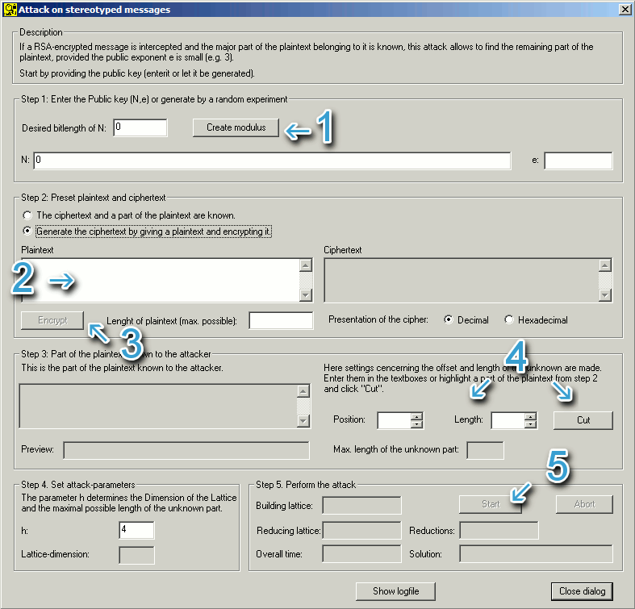

You can reach this dialog via the menu entry Individual Procedures \ RSA Cryptosystem \ Lattice Based Attacks on RSA \ Attack on Stereotyped Messages.
The dialog Attack on stereotyped messages
offers two different approaches:
1. Generate example input data (enter only parts of the required information)
and start an attack
Is is possible to generate an own example in the dialog which then
can be attacked. This mode leaves unexperienced users with the option to try
out the capabilities and limits of the attack.
2. Enter all input data manually and start the attack
By entering the public key, the known part of the message and the ciphertext
the attack can be mounted. After the offset and length of the unknown part are
provided by the user, the attack can be started. This mode is not to be recommended
to inexperienced users.

First the public key is needed. Then the known part of the plaintext and the complete ciphertext has to be entered. Furthermore the offset and the length of the unknown part has to be entered. This can be done by entering them directly into the textboxes or using the spin buttons. If the plaintext is already entered at this stage, changes can be directly monitored in the "Preview" textbox.
In the "Attack parameters" group the parameter h can be changed (h>1). A greater value fo h allows a bigger part of the message to be unknown, but an increase in this number results in a bigger lattice-dimension and thus negatively influences the runtime of the program.
N:
81310067042521973654412416255383522902083490331150101578762604997556337351877500251868504140980638835702886192443448896428977810893957566807779481557371020210138654283590601149334614497294215115728214075082663632500764651168005473090221075184203807588533522903997544767899971452793878122769013464319929212827
e:
3
Ciphertext (decimal):
75762050830648006314132960887315331648974069561264206858312424982664879616589030927769421532163693314271306061228215850461377786583482782397480153849655511217095601419134842131061003335859142592254645319509059791913787324022588737181121719463569440688425748225272034729177344946231277860225000833094616077032
Known part of the plaintext
(without the qoutes):
"Hello Bob!
Todays password is:
Sincerely, the boss."
Offset of the unknown part:
44
Length of the unknown part:
10